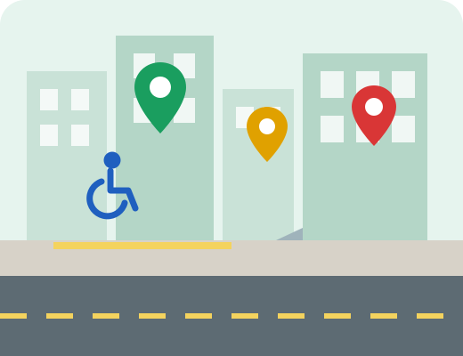

CitizenTech · Rio de Janeiro
Saiba antes de sair se o caminho é acessível.
O AcessaBrasil mostra no mapa quais lugares têm rampa, piso tátil, Libras, semáforo sonoro, vagas para idosos e para pessoas com deficiência ou autismo, e quais são calmos o bastante para quem tem sensibilidade a barulho. Também avisa se a calçada até eles está livre. Começamos pelo Centro do Rio.
- Acessível
- Acessibilidade parcial
- Sem acessibilidade

O problema
A barreira só aparece quando já é tarde.
Quem usa cadeira de rodas, tem baixa visão, é autista, é idoso ou anda com carrinho de bebê sai de casa sem saber se o lugar tem entrada acessível, se a calçada está livre, se há vaga reservada ou se o ambiente é barulhento demais. Muitas vezes a pessoa só descobre a barreira quando já está na frente dela.
Fonte: IBGE, PNAD Contínua 2022, módulo Pessoas com Deficiência.
Para quem é
Marcos, 34 anos
Usa cadeira de rodas e trabalha no Centro. Precisa saber se a rampa da faixa está livre e se o prédio tem elevador.
Ana, mãe do Theo, 8 anos
Theo é autista e se desorganiza com barulho alto. Ana procura lugares calmos, com horário silencioso e vaga TEA.
Dona Lúcia, 72 anos
Tem baixa visão e vai de carro com o neto. Precisa de vaga para idoso perto e de semáforo sonoro para atravessar com segurança.
Personas ilustrativas criadas pela equipe.
Mapa de acessibilidade
Encontre lugares acessíveis no Centro
Filtre pelo recurso que você precisa. Clique no pin para ver os detalhes e traçar a rota no Google Maps.
Dados simulados para o protótipo: os nomes dos lugares são reais, mas as avaliações de acessibilidade ainda não foram verificadas em campo.
Como funciona
Do sensor na calçada ao aviso no seu celular
1. O semáforo sonoro mede e avisa
Um ESP32 instalado no semáforo de pedestres apita para guiar quem não enxerga e, com um sensor ultrassônico, mede a largura livre da rampa da faixa. Se algo bloqueia a passagem, o LCD e o buzzer avisam no local.
2. O Python decide
Cada leitura é classificada em LIVRE, ATENÇÃO ou BLOQUEADO. O programa calcula a média do dia e o percentual de leituras em alerta.
3. A página mostra
O pin no mapa ganha a cor do local e o aviso da calçada. A comunidade também avalia lugares e completa o mapa.
Semáforo sonoro de pedestres
Comum em cidades de países como Japão, Austrália e Espanha, o semáforo sonoro emite um tom lento enquanto o sinal está fechado para o pedestre (para a pessoa cega encontrar o botão), bipes rápidos quando abre e bipes cada vez mais rápidos quando vai fechar. Aperte o botão e ouça.
AGUARDE · sinal fechado para pedestres
Teste a regra da calçada
Digite quantos centímetros de passagem livre a calçada tem e veja o aviso que o cidadão recebe.
Aguardando
O resultado aparece aqui.
| Largura livre | Estado | Aviso |
|---|---|---|
| 120 cm ou mais | LIVRE | Passagem acessível para cadeira de rodas. |
| 90 a 119 cm | ATENÇÃO | Passagem estreita, siga com cuidado. |
| menos de 90 cm | BLOQUEADO | Use a rota alternativa. |
| Ruído medido | Classe | O que significa |
|---|---|---|
| até 55 dB | CALMO | Ambiente tranquilo, referência da OMS para áreas externas de dia. |
| 56 a 70 dB | MODERADO | Conversa normal com ruído de fundo. |
| acima de 70 dB | BARULHENTO | Pode causar sobrecarga sensorial. Leve abafador ou escolha outro horário. |
Participe
Avalie um local e ajude quem vem depois
Esteve em algum lugar do Centro? Conte o que encontrou. A avaliação vira um novo pin no mapa.
- 0 locais no mapa
- 0% com acessibilidade completa
- 0 calçadas em alerta
- 0 lugares calmos para quem tem sensibilidade sensorial
Equipe
Quem constrói o AcessaBrasil
Débora Gonçalves da Silva
RM575926
Pedro Paulo Carvalho Coutinho
RM575957
Vanessa Santos Martins de Lima Nascimento
RM576450
- ODS 3 · Saúde e bem-estar
- ODS 9 · Inovação e infraestrutura
- ODS 10 · Redução das desigualdades
- ODS 11 · Cidades sustentáveis